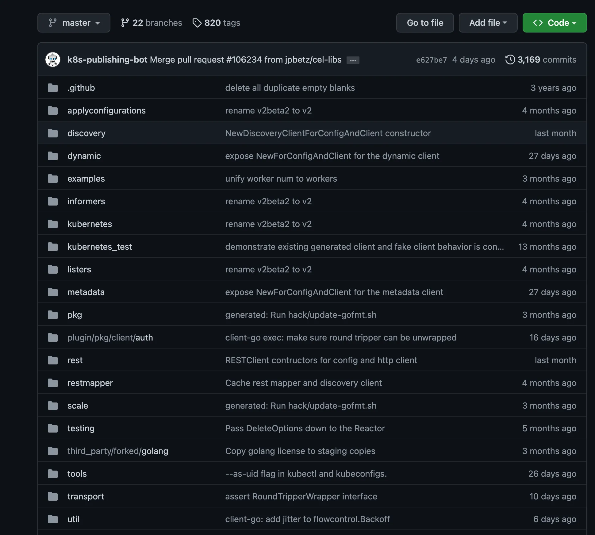

Kubernetes project provides a number of the third-party consumable repository under kubernetes or kubernetes-sigs organization on Github. In the series of blog, I will go through such upstream k8s repositories and code, which are needed most frequently to write extensions for Kubernetes. Also provides some examples for using different k8s packages for developing Kubernetes applications in Golang. First covers famous kubernetes package called client-go.
client-go Link to heading
client-go is one of the most useful packages for writing Golang based Kubernetes applications. This is the Kubernetes APIs client library for Golang, which is used in almost any kind of extension that you are writing for Kubernetes.
-
client-gois an API client for Kubernetes that supports all API kinds which are officially part of Kubernetes e.g Pods, Services, Deployments, etc -
Apart from standard CRUD verbs, it also supports a special verb
Watchfor Kubernetes like API’s -
To use this in your projects, you need to import this as
k8s.io/client-go

Packages and their usages Link to heading
- kubernetes package contains the clients to access Kubernetes API. It provides typed clients for all types officially part of Kubernetes. For example, you are writing a Kubernetes app that will list all pods in a cluster
- For out of the cluster apps configurations
var kubeconfig *string
if home := homedir.HomeDir(); home != "" {
kubeconfig = flag.String("kubeconfig", filepath.Join(home, ".kube", "config"), "(optional) absolute path to the kubeconfig file")
} else {
kubeconfig = flag.String("kubeconfig", "", "absolute path to the kubeconfig file")
}
flag.Parse()
// use the current context in kubeconfig
config, err := clientcmd.BuildConfigFromFlags("", *kubeconfig)
if err != nil {
panic(err.Error())
}
// create the clientset
clientset, err := kubernetes.NewForConfig(config)
if err != nil {
panic(err.Error())
}
pods, err := clientset.CoreV1().Pods("").List(context.TODO(), metav1.ListOptions{})
if err != nil {
panic(err.Error())
}
fmt.Printf("There are %d pods in the cluster\n", len(pods.Items))
- For in-cluster apps configurations
config, err := rest.InClusterConfig()
if err != nil {
panic(err.Error())
}
// creates the clientset
clientset, err := kubernetes.NewForConfig(config)
if err != nil {
panic(err.Error())
}
pods, err := clientset.CoreV1().Pods("").List(context.TODO(), metav1.ListOptions{})
if err != nil {
panic(err.Error())
}
fmt.Printf("There are %d pods in the cluster\n", len(pods.Items))
For more information on Kubernetes clients and how they are implemented, have a look at the kubernetes package here.
discoverypackage is used to discover APIs supported by a Kubernetes API server. This is used by many tools likekubectl,helmetc to find out different APIs and their versions supported by the Kubernetes API server.
dClient := discovery.NewDiscoveryClient(clientset)
// returns supported groups and resources for all groups and versions.
allGroups, allResources, err := dClient.ServerGroupsAndResources()
if err != nil {
return nil, err
}
// returns the supported resources for a group and version.
rs, err := dClient.ServerResourcesForGroupVersion("apps/v1")
if err != nil {
return nil, err
}
// returns the supported resources with the version preferred by the server.
preferredResources, err := dClient.ServerPreferredResources()
if err != nil {
return nil, err
}
// Get Kubernetes API Server version info
versionInfo, err := dClient.ServerVersion()
if err != nil {
return nil, err
}
For information on how the discovery client is implemented, have a look at the discovery client interface and its implementation here.
dynamicdynamic package contains a dynamic client that can perform generic operations on arbitrary Kubernetes API objects. Typed clients use program compilations to enforce data safety and some validation. However, when using typed clients, programs are forced to be tightly coupled with the version and the types used. This is where dynamic clients come in handy which uses a single typeunstructured.Unstructuredto represent all objects from the server. Unstructured uses a collection of nested map[string]interface{} values to create an internal structure that closely resembles the REST payload from the server.
For example, creating a deployment,
var kubeconfig *string
if home := homedir.HomeDir(); home != "" {
kubeconfig = flag.String("kubeconfig", filepath.Join(home, ".kube", "config"), "(optional) absolute path to the kubeconfig file")
} else {
kubeconfig = flag.String("kubeconfig", "", "absolute path to the kubeconfig file")
}
flag.Parse()
namespace := "default"
config, err := clientcmd.BuildConfigFromFlags("", *kubeconfig)
if err != nil {
panic(err)
}
client, err := dynamic.NewForConfig(config)
if err != nil {
panic(err)
}
deploymentRes := schema.GroupVersionResource{Group: "apps", Version: "v1", Resource: "deployments"}
deployment := &unstructured.Unstructured{
Object: map[string]interface{}{
"apiVersion": "apps/v1",
"kind": "Deployment",
"metadata": map[string]interface{}{
"name": "demo-deployment",
},
"spec": map[string]interface{}{
"replicas": 2,
"selector": map[string]interface{}{
"matchLabels": map[string]interface{}{
"app": "demo",
},
},
"template": map[string]interface{}{
"metadata": map[string]interface{}{
"labels": map[string]interface{}{
"app": "demo",
},
},
"spec": map[string]interface{}{
"containers": []map[string]interface{}{
{
"name": "web",
"image": "nginx:1.12",
"ports": []map[string]interface{}{
{
"name": "http",
"protocol": "TCP",
"containerPort": 80,
},
},
},
},
},
},
},
},
}
// Create Deployment
fmt.Println("Creating deployment...")
result, err := client.Resource(deploymentRes).Namespace(namespace).Create(context.TODO(), deployment, metav1.CreateOptions{})
if err != nil {
panic(err)
}
fmt.Printf("Created deployment %q.\n", result.GetName())
toolspackage contains different tools which are useful in different use cases.
clientcmduses for building clients from a kubeconfig file, which can be used to create clients to interact with the Kubernetes API Server.
config, err := clientcmd.BuildConfigFromFlags("", *kubeconfig)
if err != nil {
panic(err)
}
cacheuseful for writing controllers. It contains most of the logic related to Kubernetes client-side caching.
informersThe client interface in the clientset includes the Watch verb, which offers an event interface that reacts to changes (adds, removes, updates) of objects. Informers give a higher-level programming interface for the most common use case for watches: in-memory caching and fast, indexed lookup of objects by name or other properties in-memory. These are helpful in writing controllers usingclient-go
A controller that accesses the API server every time it needs an object creates a high load on the system. In-memory caching using informers is the solution to this problem. Moreover, informers can react to changes of objects nearly in real-time instead of requiring polling requests.
- Get input from the API server as events.
- Offer a client-like interface called Lister to get and list objects from the in-memory cache.
- Register event handlers for adds, removes, and updates.
- Implement the in-memory cache using a store.
The informers are generated by a code generator and shipped as part of client-go for the standard Kubernetes resources in k8s.io/client-go/informers
import (
...
"k8s.io/client-go/informers"
)
...
clientset, err := kubernetes.NewForConfig(config)
informerFactory := informers.NewSharedInformerFactory(clientset, time.Second*30)
podInformer := informerFactory.Core().V1().Pods()
podInformer.Informer().AddEventHandler(cache.ResourceEventHandlerFuncs{
AddFunc: func(new interface{}) {...},
UpdateFunc: func(old, new interface{}) {...},
DeleteFunc: func(obj interface{}) {...},
})
informerFactory.Start(wait.NeverStop)
informerFactory.WaitForCacheSync(wait.NeverStop)
For example usage of informers and cache, please have look at sample-controller under Kubernetes org https://github.com/kubernetes/sample-controller